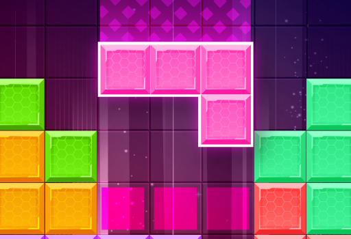
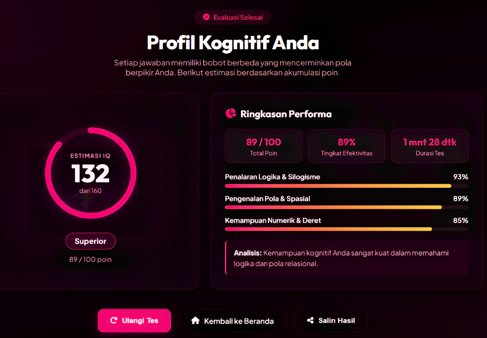

Temukan Potensi Kognitifmu
Platform tes kognitif berbasis metrik modern untuk mengukur tingkat kecerdasan, penalaran logis, dan potensi berpikirmu secara akurat dan interaktif.
Tentang MindMetric
Mengevaluasi penalaran logis dan kapasitas intelektual melalui metrik tes yang terstruktur dan objektif.
Platform evaluasi kognitif independen yang dirancang khusus untuk mengukur potensi berpikir, penalaran logis, dan kapasitas intelektual Anda secara akurat.

01
Menyediakan sarana evaluasi mandiri yang melatih logika, ketajaman analisis, dan pola pikir strategis.

02
Menyediakan sarana asah otak interaktif untuk mempertajam ketajaman berpikir dan pemecahan masalah.

03
Memberikan laporan skor dan analisis kognitif secara instan, mendalam, dan mudah dipahami oleh pengguna.
Fitur Unggulan
01
Dirancang dengan teknologi yang memberikan pengalaman tes yang akurat dan berkesan.
02
Beralih mulus antara "Dark Mode" dan "Light Mode" sesuai kenyamanan visual mata Anda tanpa jeda pemuatan.
03
Skor dan analisis metrik kognitif langsung keluar begitu tes selesai dikerjakan.
04
Optimal diakses melalui PC, tablet, maupun ponsel pintar Anda.
Alur Pengujian
Tiga langkah sistematis untuk memetakan profil kognitif Anda.
01
Mulai Tes
Masuk ke lembar uji interaktif tanpa proses registrasi yang rumit.
02
Jawab Soal
Selesaikan rangkaian tantangan logika, pola visual, dan numerik.
03
Terima Hasil
Dapatkan skor IQ kognitif Anda.
Siap Mengukur kemampuan Kognitifmu?
Tes dirancang cepat, akurat, dan menantang. Tanpa registrasi rumit, langsung uji logika dan pola pikirmu sekarang.
Developer
3 Tokoh penting yang membuat projek ini dapat terwujud
Habibi Syazwan
Perencanaan projek, struktur dasar HTML, serta perancangan alur logika JavaScript.
Aisha Ladiva Widodo
Pengembangan antarmuka visual, penataan styling CSS, dan estetika desain website.
Muhammad Romi Ilham
Pengecekan bug, optimasi performa, serta memastikan website berjalan lancar dan stabil.